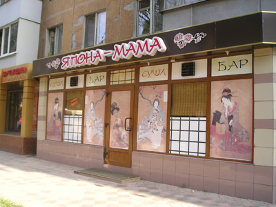
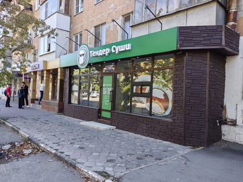

Япона-кафе


В самом кафе ни разу не был и даже не знаю, как оно выглядит внутри. «Япона-мама» это вроде как ругательство, хоть и не матное, и не слишком грубое, а все же. И в далеком уже 2008 году названия, содержащие ругательства или какие-то пошлые намеки, шока уже не вызывали, но все еще не были делом привычным и повседневным, как это стало сейчас.
Надо сказать, что фасад был оформлен довольно приятно: и цвета отделки, и картины. Наверняка, и подсветка вечером смотрелась хорошо. Даже интересно, как там было внутри? Но того кафе уже нет. Во всяком случае нет кафе именно того оформления. Сейчас (2026 г.) в том помещении находится тоже кафе японской кухни. Нынешнее название уже совсем не такое примечательное. Да и оформление фасада, на мой взгляд, оставляет желать много лучшего. С ракурса на фото, оно хотя бы прилично выглядит. А вот если посмотреть под другими углами и заглянуть сквозь стекла, возникает сомнение, что кафе вообще функционирует.


Рядом с кафе в 2008 году был магазин сумок и чемоданов, как следует из названия. Теперь там пункт выдачи. Фасад второго этажа дома изменился слабо: только отвалилось еще несколько плиточек, которыми он отделан. А больше я никаких изменений не замечаю. Кстати, и тротуарная плитка перед кафе, кажется, тоже не менялась, только немного постарев.